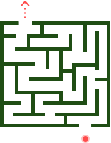

404
Looks like you are in a maze
Use keyboard to control the ball to maze exit to return home, or
Go back HomeLooks like you are in a maze
Use keyboard to control the ball to maze exit to return home, or
Go back Home